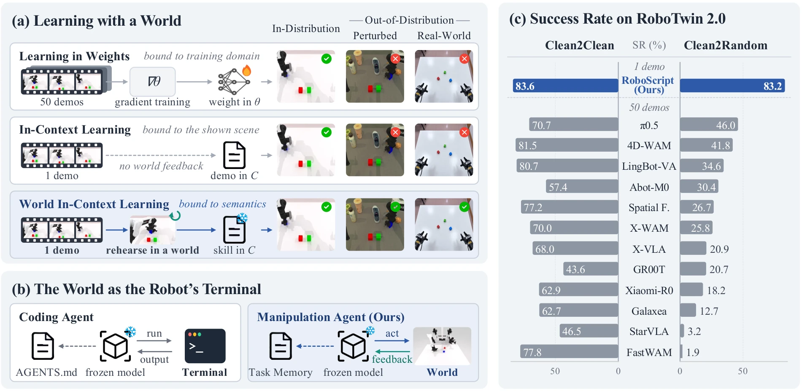
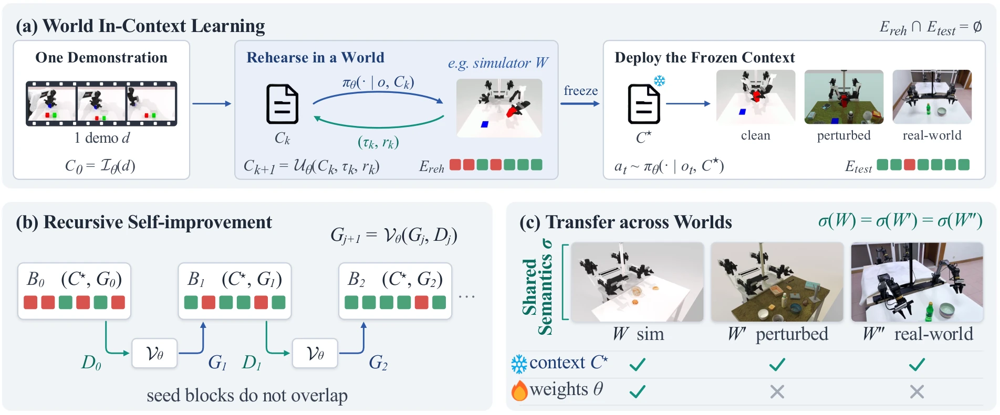
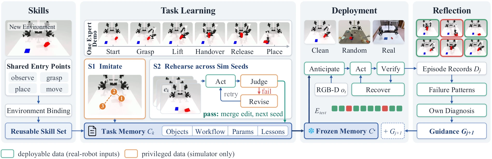
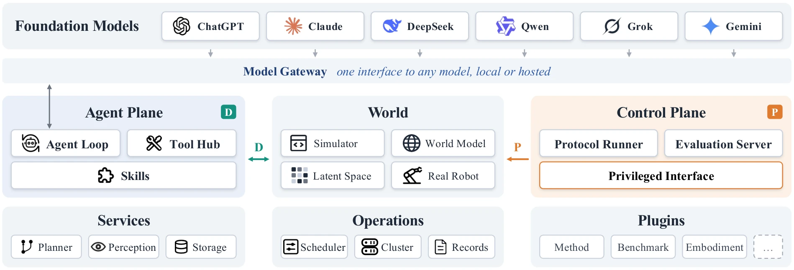
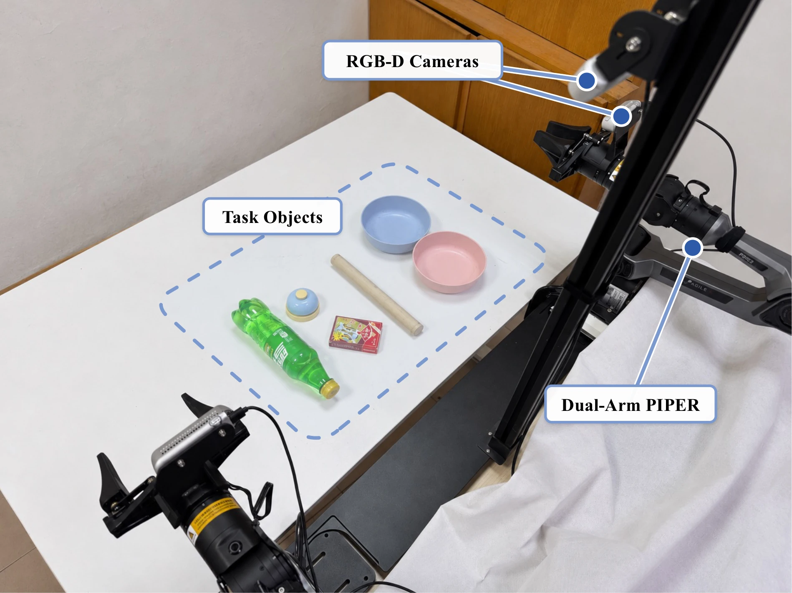
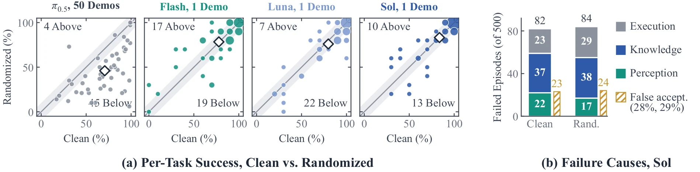
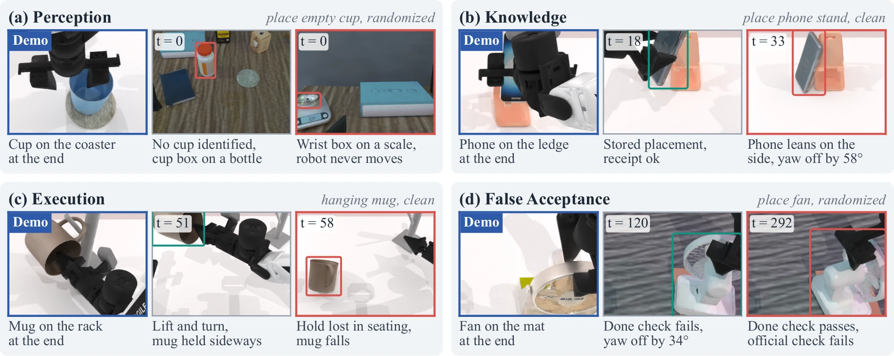
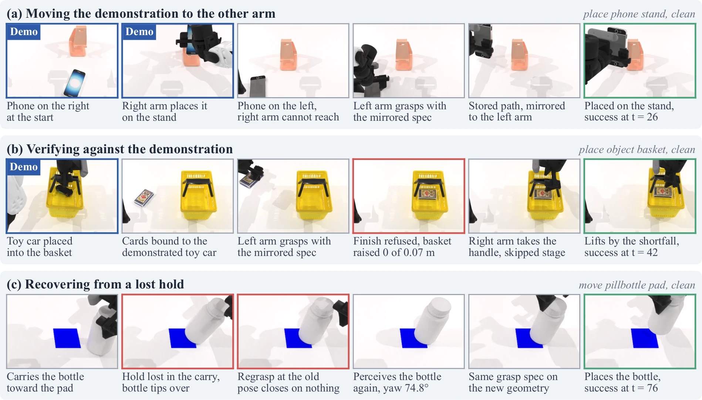
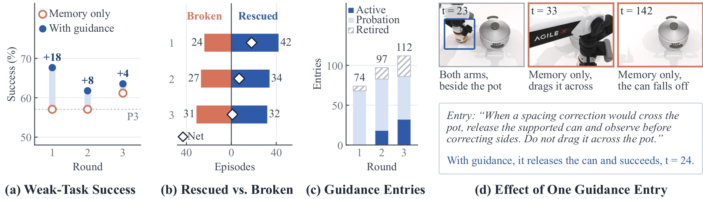
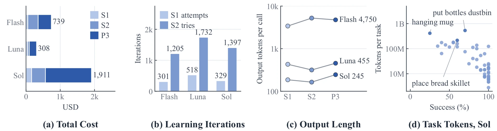

| Method | Demos /task |
Pol. | Agt. | Success rate (%) | Retention (%) |
||
|---|---|---|---|---|---|---|---|
| Clean | Rand. | Avg. | |||||
Coding agents learn a repository by running code and reading what comes back. RoboScript lets a robot learn a task the same way, in a simulator.

Click to enlarge(a) Skill in weights is bound to the training domain, ICL to the shown scene; WICL rehearses in a world and stores semantics that transfer. (b) The coding-agent stack, with the world in place of the terminal. (c) RoboTwin 2.0 success from one demo.
Trained action policies write manipulation skill into network weights, tying what is learned to the distribution it is learned from. In-context learning (ICL) avoids this coupling but has not matched trained policies, because a demonstration recorded in another scene carries no feedback from the world the robot currently faces. We observe that what an agent learns in context is semantic, recording task steps and object roles rather than visual appearance, so experience gathered in one world transfers to another. Based on this insight, we propose World In-Context Learning (WICL), a paradigm in which a frozen model starts from a demonstration, rehearses the task in a world such as a simulator, and writes the feedback into its context rather than its weights. We build RoboScript, a modular infrastructure that implements WICL for agentic manipulation. From a single demonstration, RoboScript learns each task through rehearsal in simulation, freezes the learned knowledge as a Task Memory, and deploys the frozen memory on new scenes with data isolation that ensures every deployment input is available on a real robot. On all 50 tasks of RoboTwin 2.0, RoboScript reaches 83.4% mean success across clean and randomized settings with one demonstration per task and no gradient updates, exceeding the strongest trained action policy by over 20 points. The method generalizes across visual distributions, improves through reflection, scales with the foundation model, and transfers to a physical dual-arm robot through cross-embodiment memory adaptation. With a world in the loop, a robot can learn a manipulation task in its context as well as it learns one in its weights.
Rehearse from one demonstration, freeze the context, deploy it on scenes it has never seen. Weights never change.

Click to enlarge(a) Rehearse in a world, freeze the context, deploy on unseen instances. (b) Self-improvement over disjoint blocks. (c) Context refers to shared semantics σ and transfers across worlds; weights do not.

Click to enlargeD deployable data, the same inputs a real robot has · P privileged simulator data, used only as supervision while learning.
Hover over a stage.

Click to enlargeEvery component is a replaceable service. The agent reaches the world only through the deployable interface (D); only the control plane touches privileged data (P).
The frozen model writes each task down as plain text: objects, workflow, parameters and lessons, with arms named by role, not left or right. This is the one for place_object_basket.
Blue: added by rehearsal. Quoted from the stored file; [...] marks cuts.
Memories learned on a simulated ALOHA run on a dual-arm PiPER after a lightweight adapter rewrites them. No new demonstration, no re-rehearsal.

Click to enlargeDual-arm PiPER with RGB-D cameras.
| Method | Demos /task |
Pol. | Agt. | Success rate (%) | Retention (%) |
||
|---|---|---|---|---|---|---|---|
| Clean | Rand. | Avg. | |||||
Mean over all 50 tasks; retention is randomized divided by clean. Pol./Agt.: uses a trained policy / an agent. Bold best, underlined second. †Randomized only, five seeds per task; N demonstrations fine-tune the LingBot-VLA base.

Click to enlargePer-task success stays within ±10 points under randomization, and knowledge failures do not grow (37 clean, 38 randomized).

Click to enlargeOne failure per cause: a cup never found, a leaning phone, a dropped mug, and a false acceptance.

Click to enlargeWith a frozen memory the agent mirrors the demo to the other arm, returns to a skipped stage, and re-grasps a dropped bottle.

Click to enlargeReflection rescues more episodes than it breaks in every round: +18, +8, +4 net on the 17 weak tasks, with weights untouched.

Click to enlargeAll 50 tasks plus 1,000 evaluation episodes: 308 USD with GPT-5.6-Luna, 1,911 USD with GPT-6.1-Sol, mostly evaluation.
@article{roboscript2026,
title={World In-Context Learning for Agentic Robot Manipulation},
author={Fang, Heng and Guo, Zehui and Zhang, Yuehan and Du, Mingyang and Liang, Dingkang and Bai, Xiang},
journal={arXiv preprint},
year={2026}
}